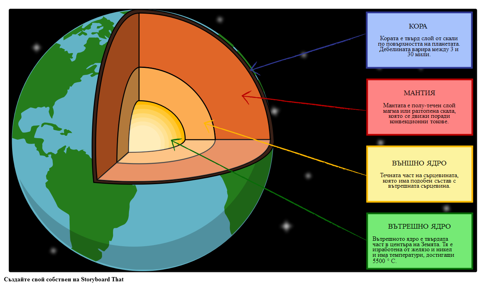
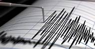
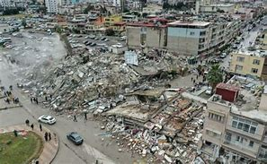

Сеизмичните вълни са енергийни вълни, които се разпространяват през земната кора при земетресения, изригвания на вулкани или изкуствени експлозии. Сеизмичните вълни, възникват вследствие на процеси, възникнали в огнище в Земята, наречено хипоцентър. След това те започват да се разпространяват радиално в земните недра. По своя път през вътрешността на Земята те могат да се пречупват, отражават, разсейват, абсорбират и да променят вида си. Скоростта на разпространение на сеизмична вълна зависи от техния вид и от вида на материята, през която преминават. Това може да се използва за изучаването на строежа на нашата планета.
🔹 Видове сеизмични вълни
- P-вълни (надлъжни):При P-вълните, наречени така от prima – пръв, заради това, че се регистрират първи. Те са надлъжни вълни, тоест частиците трептят по посока на разпространението на вълната. Те могат да се разпространяват както в твърди тела, така и в течности и газове. P-вълните много приличат на звуковите вълни.
- S-вълни (напречни): При S – вълните (вторични вълни), земята се люлее периодично на двете противоположни страни. Тези вълни са напречни, тоест могат да се разпространяват само в твърда скала и по водната повърхност. Скоростта им е 60% от тази на P – вълните, но са по-разрушителни
- Повърхностни вълни:Повърхностни вълни разпространяват се точно под повърхността
на земята. Те са бавни, с малък период и честота, но голяма амплитуда. Това е причината те да са
най-разрушителните сеизмични вълни. Делят се на Вълни на Лъв и Вълни на Рейли.
1. Вълни на Лъв или (L) вълни - Вълните на Лъв причиняват хоризонтално разкъсване на земната повърхност. Те се разпространяват по-бързо от Вълни на Рейли, и са с 90% от скоростта на S – вълните.
2. Вълните на Рейли са подобни на морските вълни, въпреки това те се различават от тях поради голямата си еластичност. Те са по-бавни от повърхностните вълни и са много разрушителни. Не може точно да се определи тяхната амплитуда, дължина на вълната и скорост.
Схема на разпространение на P и S вълни.

Модел на вътрешността на Земята, през която преминават сеизмичните вълни.

Примерен запис от сеизмограф при земетресение.

Разрушения от силно земетресение – последица от повърхностни вълни.
⬅ Обратно към началото